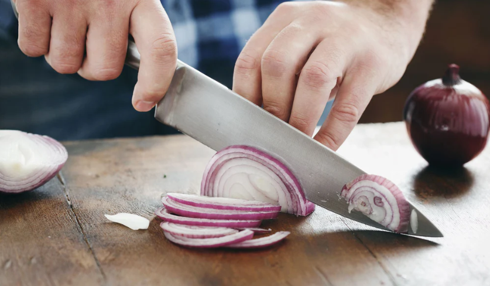
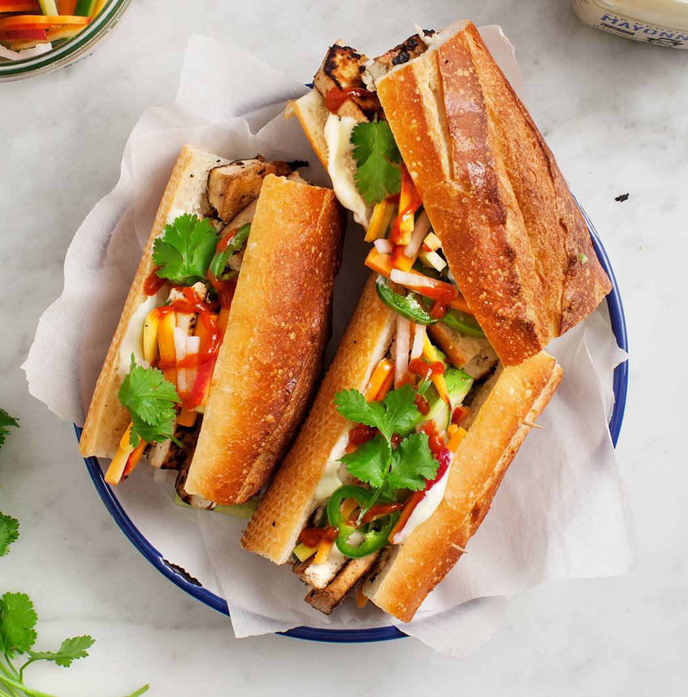
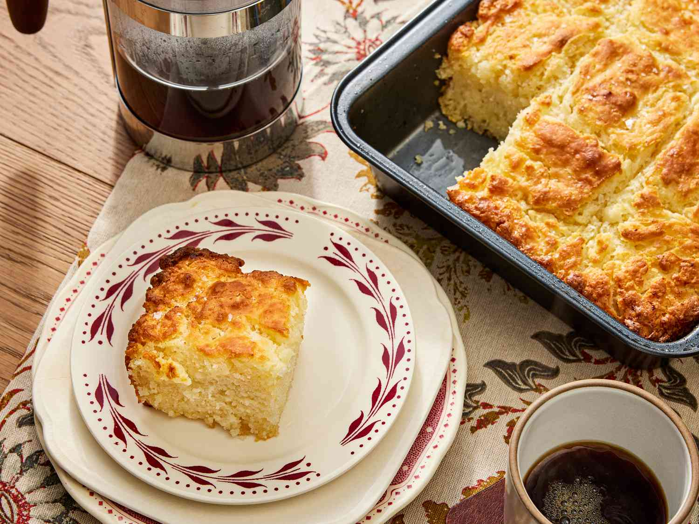
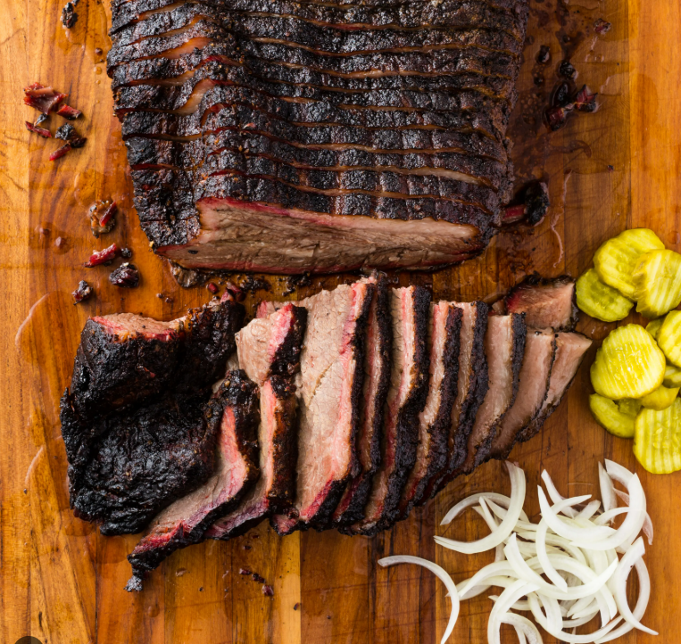
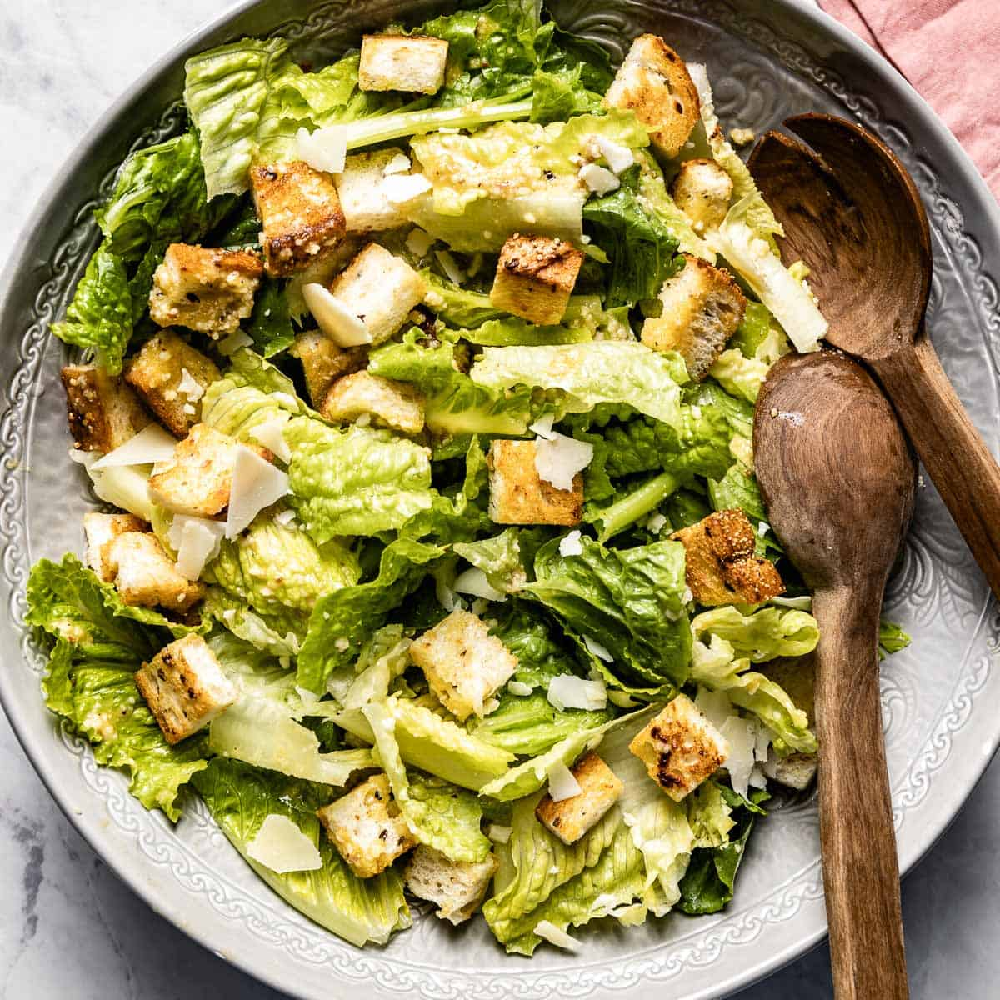
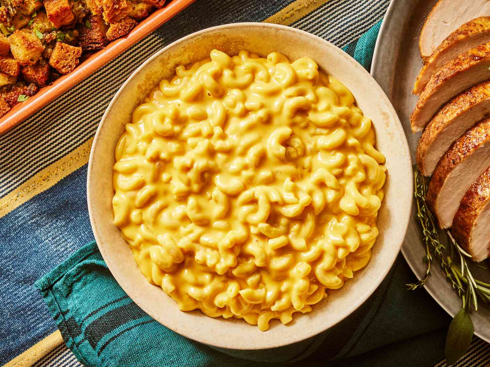
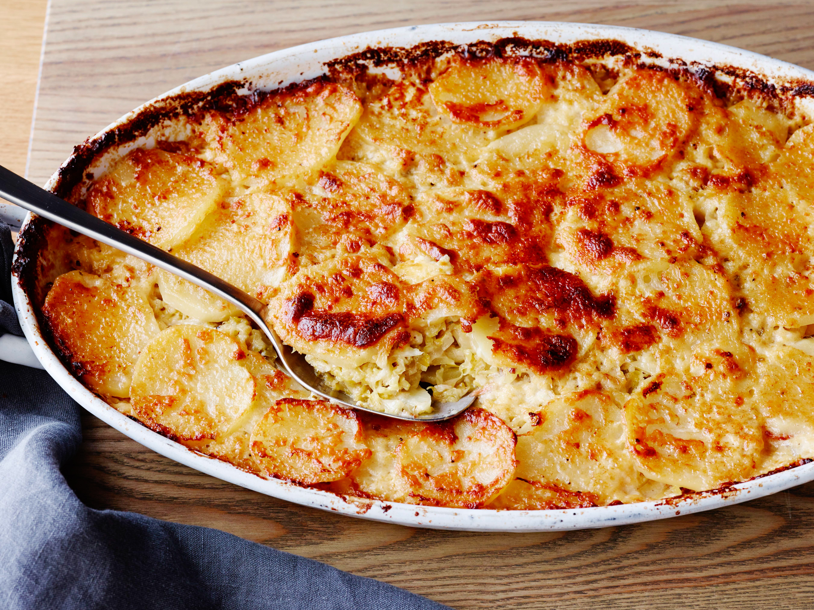
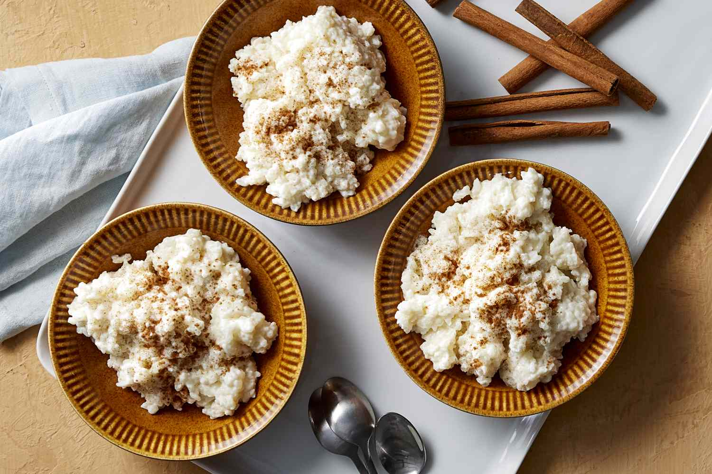

BestCook
Skills
Your ultimate guide to becoming a more confident and skilled home chef.
Featured Skill

Chop an Onion Like a Pro
Master the Art of Chopping an Onion
The onion is the foundation of countless dishes, but for many, chopping it can be a tearful and frustrating experience. This step-by-step guide walks you through the essential techniques for prepping, slicing, and dicing an onion with confidence and ease. Learn how to minimize tears, get perfectly uniform pieces every time, and discover the best way to handle different types of cuts for your recipes.
Trending Now
Popular This Week
Chicken Piccata

Tofu Banh Mi

Betty's Butter Biscuits

Obie's Texas Brisket
Hand-Picked for You
Recommendations

Classic Caesar Salad

Karla's Mac N Cheese

Potatoes au Gratin

Richmond Style Rice Pudding
Have a Question? Ask the Experts!
Can't find the answer? Submit your cooking question — we might feature it in an article or video!
Ask a Question